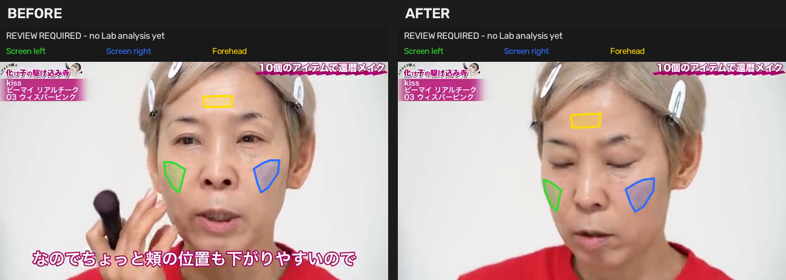

生成時点：確認待ち（解析は未実行）
生成日時（UTC）：2026-09-20T14:29:11.255696+00:00
画面左頬＝緑、画面右頬＝青、額＝黄。左右は画像上の位置です。

確認記録・最新の解析状態（JSON）
before：重ね合わせ画像・原寸
before：領域情報・診断 JSON
before：領域マスク NPZ
after：重ね合わせ画像・原寸
after：領域情報・診断 JSON
after：領域マスク NPZ
| 項目 | before | after |
|---|---|---|
| 顔の左右向き yaw（°） | -6.32 | -13.95 |
| 顔の上下向き pitch（°） | 2.22 | 7.52 |
| 顔の傾き roll（°） | 1.24 | 2.42 |
| 画面左頬の画素数 | 1136 | 879 |
| 画面右頬の画素数 | 1472 | 1641 |
| 額の画素数 | 897 | 1069 |
| 額 L* 中央値（参考値） | 85.88 | 76.47 |
額 L* の前後差（after − before）：-9.41。塗布・影・顔向き・照明が混ざる参考値で、露出差の測定値ではありません。
自動チェックだけで遮蔽の有無は保証できません。額の L* 差は、塗布・影・顔向き・照明の影響が混ざる参考値です。
確認 ID：d0e1313026bae28ec10b58a264078a4d
両方の画像を確認し、問題がなければ次のコマンドを PowerShell に貼り付けて実行してください。画像やマスクを変更すると承認は拒否されます。
& 'C:\Users\mail\work\ikiikimake\.venv\Scripts\python.exe' 'C:\Users\mail\work\ikiikimake\analysis\run_cheek01.py' '--output' 'C:\Users\mail\work\ikiikimake\outputs\cheek01_auto' '--approve-review' 'd0e1313026bae28ec10b58a264078a4d'問題があれば別の画像で生成し直してください。このページは生成時点の確認用スナップショットです。承認後の状態は上の「確認記録・最新の解析状態」で確認できます。
承認後の出力は Lab 色差の実験結果であり、メイク効果の点数ではありません。
{kind=link}
{kind=link}